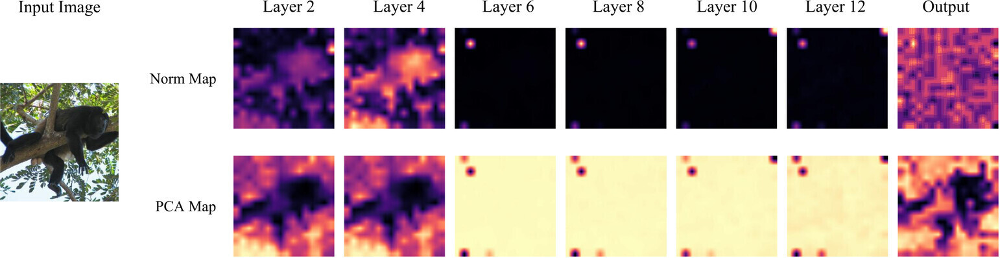
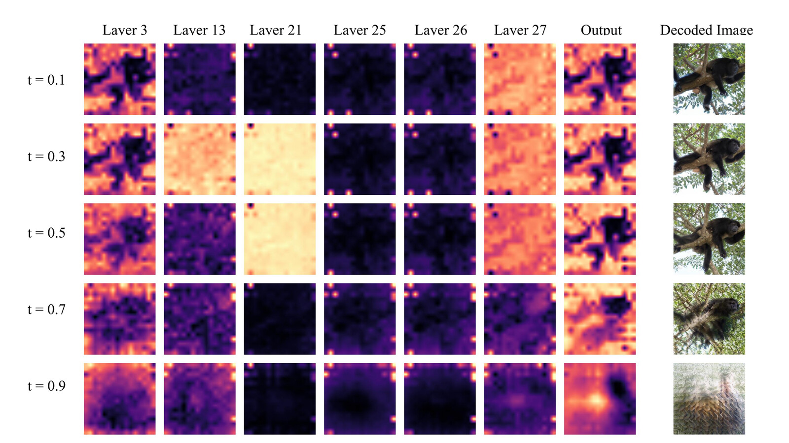
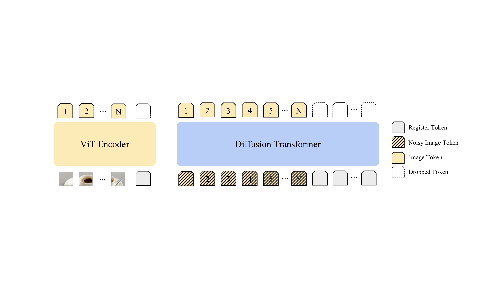
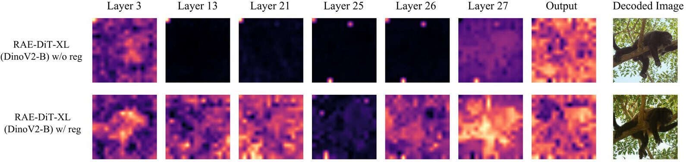
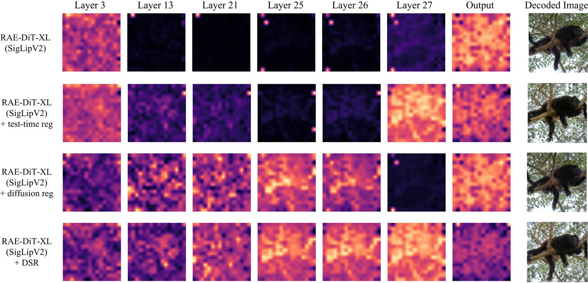
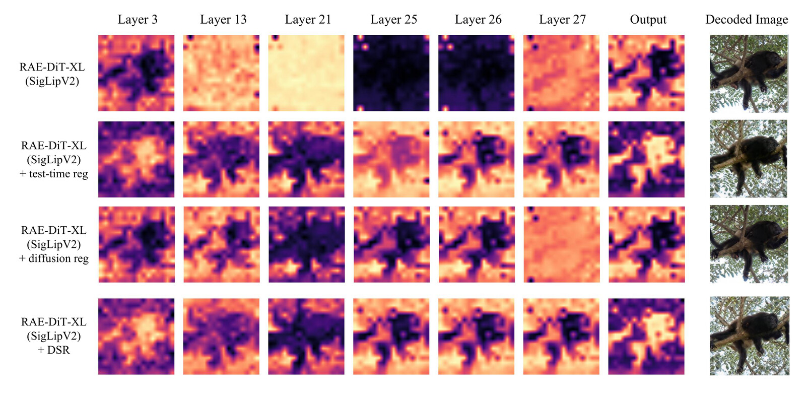
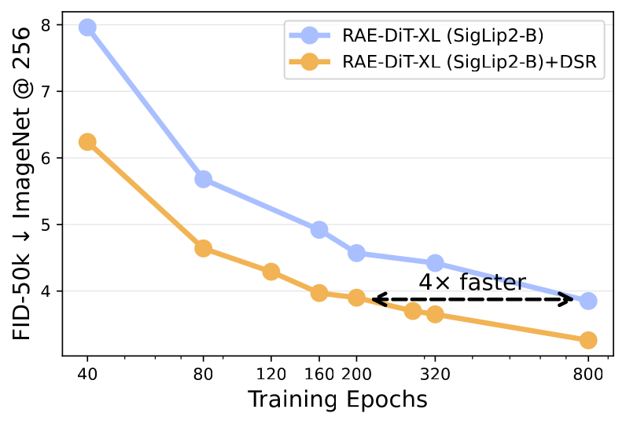
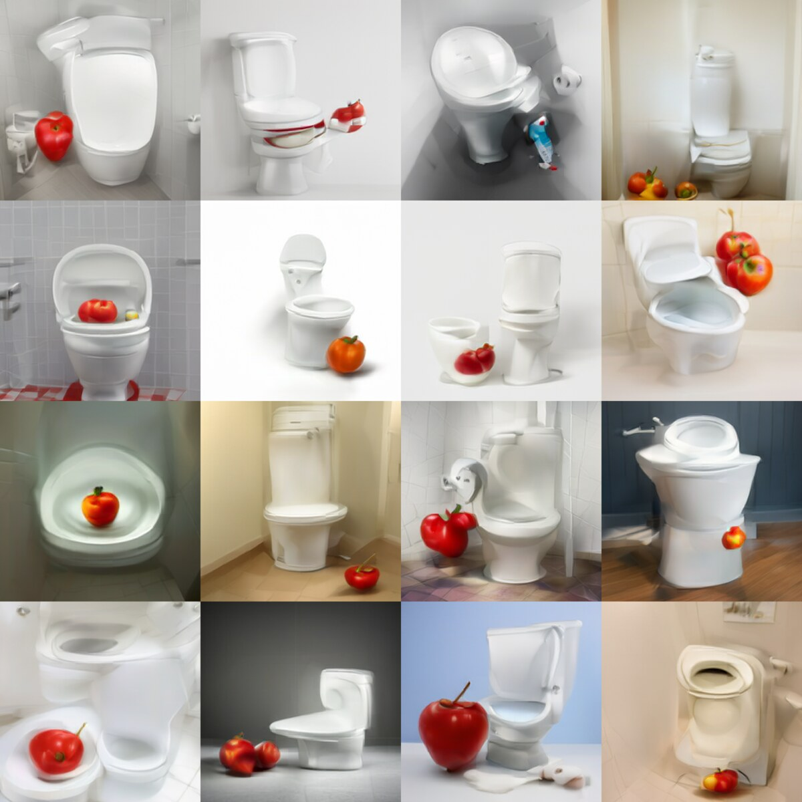
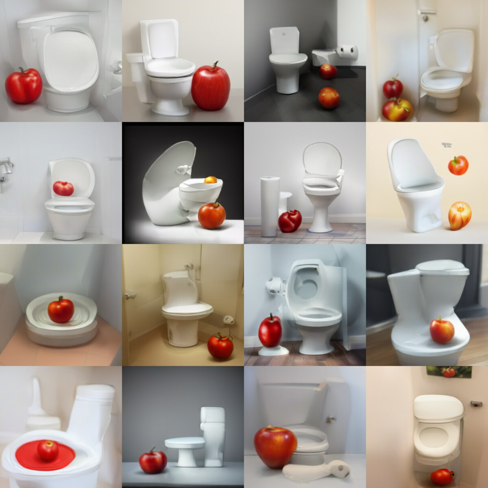

TL;DR
Outlier tokens — a handful of high-norm patch tokens that absorb attention but carry little local information — are not just a ViT recognition phenomenon. They also appear in the encoders and the denoisers of modern RAE-style diffusion pipelines, and they hurt generation quality.
Where do outlier tokens hide in a DiT pipeline?
A modern RAE-style pipeline has two transformer stages — a ViT encoder that produces the latent representation, and a diffusion transformer that denoises in that space. We observe outlier tokens in both, but with distinct patterns.


Why masking the loss doesn't fix it
A natural hypothesis is that the issue is just a few extreme-loss tokens. We tested this with a token-level loss mask that drops tokens whose representation norms exceed a threshold. As shown below, masking does not improve generation. We take this as evidence that outliers are a symptom of corrupted local patch semantics, not the root cause.
| Training strategy | % tokens filtered | FID ↓ | IS ↑ | Prec ↑ | Rec ↑ |
|---|---|---|---|---|---|
| RAE-DiT-XL (SigLIP2-B) | 0% | 5.89 | 156.54 | 0.686 | 0.562 |
| + loss masking (τ = 100) | 0.1% | 6.06 | 152.72 | 0.686 | 0.562 |
Dual-Stage Registers (DSR)
If outliers reflect degraded local patch semantics, then we want a mechanism that absorbs global, sink-like behavior without contaminating patch tokens. Register tokens do exactly that — and we apply them on both sides of the pipeline.

Encoder-side registers
When trained registers are available (e.g. DINOv2 with registers), we use them directly. They visibly suppress high-norm artifacts and consistently improve downstream DiT generation:

For encoders without trained registers (e.g. SigLIP2), we use test-time registers (TTR) — extra tokens appended at inference time. For SigLIP2-So400, where we find two distinct outlier populations, we apply TTR recursively: stabilize the encoder, then apply TTR again on the resulting representation.
| Strategy | FID ↓ | IS ↑ | Prec ↑ | Rec ↑ |
|---|---|---|---|---|
| RAE-DiT-XL (SigLIP2-B) | 5.89 | 156.54 | 0.686 | 0.562 |
| + test-time register | 4.63 | 177.20 | 0.748 | 0.542 |
| RAE-DiT-XL (SigLIP2-So400) | 7.04 | 167.01 | 0.682 | 0.515 |
| + test-time register | 6.66 | 166.88 | 0.687 | 0.527 |
| + recursive test-time register | 6.48 | 163.35 | 0.684 | 0.531 |
Diffusion-side registers
Even after fixing the encoder, the DiT itself still develops outlier tokens in its intermediate layers. We add a small number of trainable diffusion registers — learned jointly with the generator and discarded at inference. With them, internal outliers largely disappear and PCA structure becomes cleaner:


Results
Diffusion registers help across input spaces
Diffusion registers improve every input-space variant we tried — pixel-space (JiT), VAE latents (SiT), and multiple representation encoders. The gain is not tied to any particular tokenizer family.
| Method | FID ↓ | IS ↑ | Prec ↑ | Rec ↑ |
|---|---|---|---|---|
| RAE-DiT-XL (DINOv2-B, w/ encoder reg) | 4.11 | 226.44 | 0.775 | 0.529 |
| + diffusion reg | 3.92 | 226.92 | 0.773 | 0.542 |
| RAE-DiT-XL (SigLIP2-B) | 5.89 | 156.54 | 0.686 | 0.562 |
| + diffusion reg | 5.33 | 166.20 | 0.702 | 0.556 |
| RAE-DiT-XL (SigLIP2-B, w/ TTR) | 4.63 | 177.20 | 0.748 | 0.542 |
| + diffusion reg | 4.58 | 165.99 | 0.725 | 0.560 |
| VAE-SiT-XL | 16.05 | 70.11 | 0.550 | 0.647 |
| + diffusion reg | 14.47 | 78.50 | 0.554 | 0.651 |
| JiT-H | 30.34 | 22.34 | 0.424 | 0.621 |
| + diffusion reg | 23.14 | 26.36 | 0.475 | 0.611 |
ImageNet-256: class-conditional generation
Headline numbers on ImageNet-1K at 256×256. DSR consistently improves RAE-DiT and, when combined with the DDT head, reaches strong competitive numbers at a fraction of the training budget.
| Method | Epochs | #Params | gFID ↓ (no CFG) | gFID ↓ (w/ CFG) |
|---|---|---|---|---|
| Pixel diffusion | ||||
| ADM | 400 | 554M | 10.94 | 3.94 |
| JiT-H/16 | 600 | 953M | — | 1.86 |
| Latent diffusion (VAE) | ||||
| SiT-XL | 1400 | 675M | 8.61 | 2.06 |
| REPA | 800 | 675M | 5.78 | 1.29 |
| REPA-E | 800 | 675M | 1.70 | 1.15 |
| RAE-DiTDH-XL (DINOv2-B) | 800 | 839M | 1.51 | 1.13 |
| Latent diffusion with multimodal encoder (SigLIP2-B) | ||||
| RAE-DiT-XL | 80 | 676M | 5.89 | — |
| RAE-DiT-XL | 800 | 676M | 3.85 | 3.58 |
| RAE-DiT-XL + DSR | 80 | 676M | 4.58 | — |
| RAE-DiT-XL + DSR | 800 | 676M | 3.26 | 2.97 |
| RAE-DiTDH-XL | 800 | 839M | 2.91 | 2.77 |
| RAE-DiTDH-XL + DSR | 800 | 839M | 2.72 | 2.62 |

Scaling across model sizes
DSR improves gFID at every DiT scale we tried, with only ~10% added GFLOPs.
| Model | FID ↓ | IS ↑ | Prec ↑ | Rec ↑ | GFLOPs |
|---|---|---|---|---|---|
| RAE-DiT-S (SigLIP2-B) | 28.03 | 66.15 | 0.277 | 0.302 | 12.4 |
| + DSR | 23.93 | 63.86 | 0.498 | 0.470 | 13.7 |
| RAE-DiT-B (SigLIP2-B) | 20.36 | 78.76 | 0.539 | 0.493 | 46.6 |
| + DSR | 9.81 | 110.23 | 0.637 | 0.543 | 51.2 |
| RAE-DiT-XL (SigLIP2-B) | 5.89 | 156.54 | 0.686 | 0.562 | 238.1 |
| + DSR | 4.58 | 165.99 | 0.725 | 0.560 | 262.9 |
Text-to-image (Scale-RAE)
On Scale-RAE — a SigLIP2-B + MetaQuery T2I pipeline trained on 24.7M FLUX.1-schnell synthetic images — DSR also delivers a clean improvement on both GenEval and DPG-Bench.
| Model | GenEval ↑ | DPG-Bench ↑ |
|---|---|---|
| Baseline (Scale-RAE) | 42.6 | 74.3 |
| Ours (Scale-RAE + DSR) | 46.6 | 75.4 |
Qualitative samples (text-to-image)
Same prompt, same seed grid, baseline (left) vs. DSR (right). DSR's improvements tend to show up as cleaner composition, more consistent object identity, and fewer texture artifacts.

